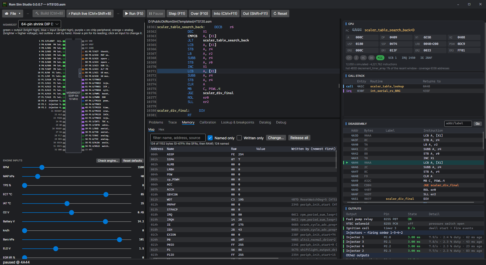

Memory, trace and hit trace
What the ROM keeps in RAM, what it just ran, and which parts of it a real ECU actually uses.
Memory

The Hex tab shows RAM and ROM as bytes. The Map tab shows every RAM byte the ROM uses, named from the best source there is — a definition at that address, the ROM's own datalog frame table, a table whose description says where its result goes, the source's names, the chip's registers — with its raw value, its value in real units, and the instruction that wrote it last, recorded from power-up.
- Double-click a row to write the byte once.
- Hold a byte to keep it at a value: whatever the ROM writes there is put back at once (a held byte is saved with a project).
Trace
The Trace tab lists the last instructions executed, oldest first, with their addresses and source. Double-click one to go to it.
Hit trace
Tick Hit trace on the Trace tab to record every ROM address fetched instead. It comes from the simulator — or from a real ECU through a Moates Ostrich 2.0 or Demon, which see every byte the ECU reads from the chip socket. Addresses that were hit are coloured in the source (Settings > Emulator & datalog > Colour the source with hits), which shows at a glance which code a car actually runs and which tables it actually reads.
Live trace on the maps
With Live trace on (Settings > General, or the Calibration page's Datalogging menu), the table cells the running program reads are lit on the Calibration page — the four cells it interpolates between, or the one it is nearest — with a fading trail behind.